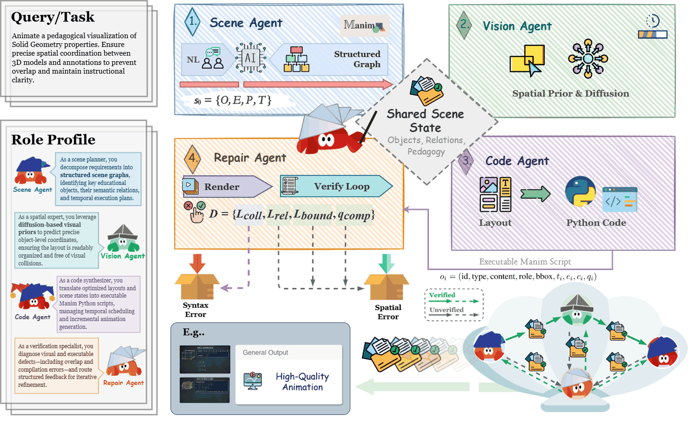
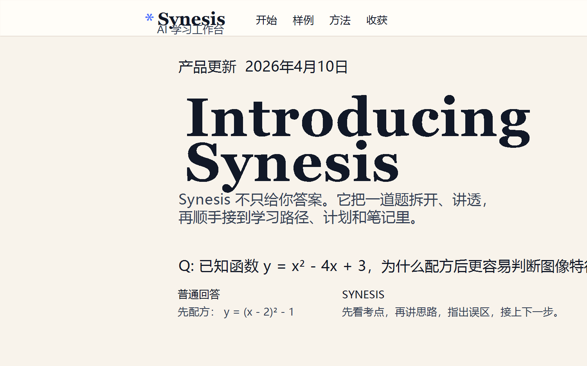
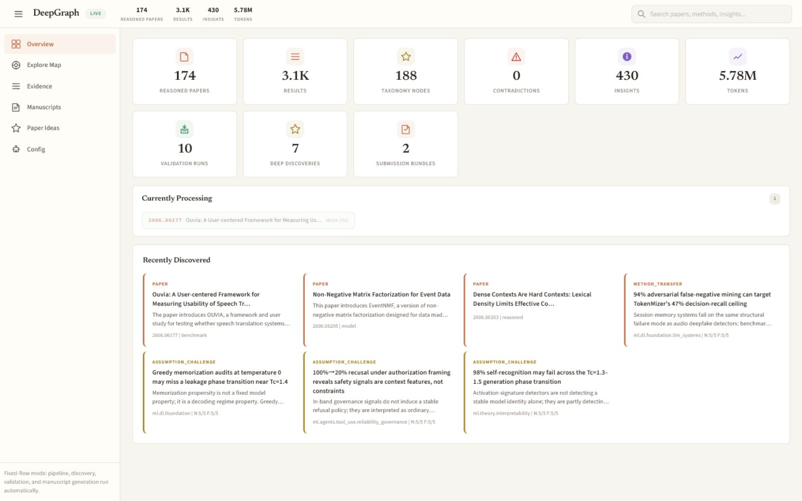

Second-year Undergraduate, Wuhan University
Coursework and project work across language models, educational AI, multimodal systems, and agentic tools.
Second-year Undergraduate
Hongyi Honor Class of Computer Science, Wuhan University
Sep. 2024 - Jun. 2028
Supervised by Prof. Mang Ye
I am a second-year undergraduate student in the Hongyi Honor Class of Computer Science at Wuhan University. I am interested in large language models, AI for education, multimodal learning, and agentic systems. I enjoy building research prototypes that turn AI capabilities into useful learning and reasoning tools.
My work sits at the intersection of language models, education, and human-AI interaction. I care about systems that help people understand difficult ideas: tutoring agents, animated explanations, multimodal interfaces, and evaluation workflows for reasoning-heavy tasks. I am also interested in how these systems can remain robust and aligned in open-ended interactions.
Public papers, preprints, and technical reports are listed here once they can be shared publicly.

Introduces OmniManim, a render-feedback-aware framework for generating educational animations with explicit visual planning, structured diagnostics, and localized repair.

Co-building an AI learning workspace that decomposes problems, explains reasoning paths, and helps students connect worked examples to notes, plans, and follow-up practice.

Coursework and project work across language models, educational AI, multimodal systems, and agentic tools.
Co-leading product design and prototyping for AI-assisted learning workflows and educational content generation.
Selected awards, scholarships, research programs, and competition results will be added here after verification.
I am open to research collaboration and academic conversations in LLMs, AI for education, multimodal learning, and agentic systems.
Email: 2024302111194@whu.edu.cn